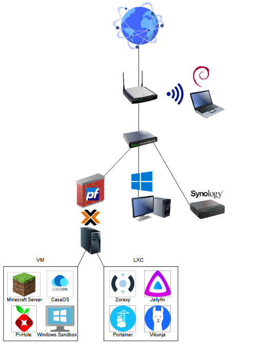

My Homelab Network
What is a Homelab
A homelab is a personal IT environment that allows you to test, experiment, and learn about various technologies. It is usually a home-based setup where you can configure servers, networks, and various services.

- Internet: Represented by the globe at the top, indicating the WAN (Wide Area Network) connection.
- Router: Receives the internet connection and provides both wired and wireless (Wi-Fi) access.
- Wireless Laptop: Thinkpad 470s with Debian 12. Connected to my network via Wi-Fi.
- pfSense Firewall: VM in Proxmox. Acts as the main firewall, managing traffic between the internet and my internal network.
- Switch: TP-Link TL-R470t+. Distributes the network connection to various devices.
- Windows Machine: My main PC for managing my network.
- Synology NAS: 2 x 2To. A Network-Attached Storage device for centralized file storage and backups.
- Homelab Server: Intel NUC Mini PC. Hosts several virtual machines (VMs) and Linux containers (LXC). Each VM/container runs a specific service.
Below are short definitions of each service I’m hosting:
Services Overview
VM
Minecraft Server
A dedicated game server hosting Minecraft worlds for multiplayer gameplay. It allows players to connect, build, explore, and collaborate in a shared environment.Pi-Hole
A network-wide ad blocker and DNS sinkhole solution. It filters out advertising and tracking domains, improving privacy and reducing unwanted content across all devices on the network.Windows Sandbox
A lightweight, isolated desktop environment provided by Windows. It’s typically used for testing software or files in a secure environment without affecting the main system.CasaOS
A simple, community-driven home cloud system for personal data storage, application management, and smart home functions. It provides an easy-to-use web interface for managing services and apps. I’m hosting here Homarr, a dashboard to have all of my services in one place.
LXC
Zoraxy
A customizable self-hosted proxy service. It allows you to easily manage and secure internal web services, offering features like SSL/TLS termination and authentication.Jellyfin
An open-source media server that lets you manage and stream your movies, music, and TV shows to various devices.Portainer
A management UI for Docker (and other container environments). It simplifies the deployment, management, and monitoring of containers through a user-friendly web interface. I’m hosting here Tailscale for reaching my homelab from anywhere.Vikunja
An open-source task management and to-do list application. It helps organize tasks, projects, and notes.
By hosting these services on my homelab, I gain greater control, privacy, and flexibility compared to relying solely on third-party services. This setup allows for a robust environment tailored to my specific needs.